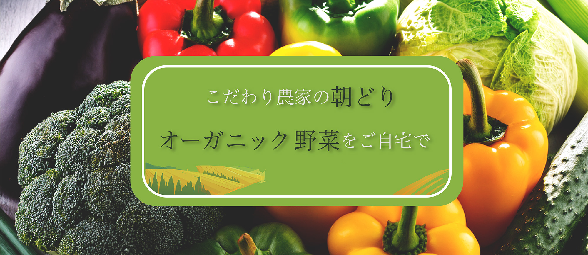
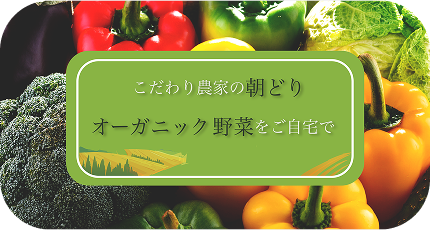
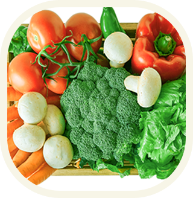
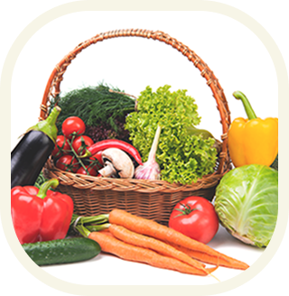

「スグ食べ」は、厳選したオーガニック農家さんの獲れたて野菜を販売しています。
食材から選べるのはもちろん、生産者からも選べます。
生産方法や生産地、それぞれ異なるこだわりなどで、
お気に入りの農家さんを見つけてください。最短で24時間以内に届く新鮮なオーガニック野菜宅配サービスです。
スグ食べが選ばれる3つの理由
-
1
本当の意味での産地直送
「なるべく収穫したばかりの状態で、野菜を味わってほしい。」スグ食べでは既存の産地直送サービスのように箱詰め用の倉庫を介することはありません。農家が収穫したその日に、お客様の元へ直送で野菜をお送りします。
-
2
安心安全な無農薬野菜
出品している生産者は、有機栽培もしくは自然栽培の農家のみ。全ての商品が無農薬・無化学肥料など、安全にこだわって生産された「オーガニック農作物」です。そのため、どの商品も安心してお買い求めいただけます。
-
3
たくさんの旬な野菜との出会い
年間数十種の野菜を作る生産者から、今が旬の多様な野菜が届きます。スグ食べでは生産者ごとに商品が異なります。中には年間100種類もの多品種生産をしている生産者も。旬な野菜はもちろん、珍しい野菜とも出会えます。
＼自身があるから、是非食べてもらいたい／
少量お試しセット
-

【ベジックス】
旬*お試し野菜セット（6品目）
¥1,280（税込／送料別）
-

【ベジックス】
旬*お試し野菜セット（6品目）
¥1,280（税込／送料別）
＼商品に不備があった際には、スグ食べが“全額”返品対応します／
スグ食べの品質保証
商品に不備があった際には、スグ食べが全額返品対応します
実物を見ずに野菜や果物を購入するのはちょっと不安…
そんな方にも安心してご購入いただけるように、スグ食べでは品質保証をお約束しています。
万が一届いた商品に不備があった際には、スグ食べにて
全額返金対応いたします。
＼実はまだこんなに少ない、日本のオーガニック農家／
オーガニック農家は、
国内全体の約0.5%
最近はレストランなどでもよく目にするのでもっとたくさんあるかと思いきや、実は オーガニック農家は国内農家の0.5%しか存在していません。
でもその0.5%のオーガニック農家は、健やかな野菜を安心して食べてもらいたいという 強い気持ちで大切に野菜を作っています。スグ食べでは、そんな農家さんを厳選し、 出品していただいています。
農家さんによって栽培方法も違います。自分や家族の体を作る礎となる野菜の栽培方法、 この際に把握してみては？
きちんと知っておきたい、栽培方法による違い
-
自然栽培 第三者機関認証ナシ 農薬・肥料・堆肥など
一切使用しません
-
有機栽培 第三者機関認証アリ -
無農薬栽培 第三者機関認証ナシ
有機の農薬・肥料・堆肥だけを使用しています
-
特別栽培 第三者機関認証アリ -
減農薬栽培 第三者機関認証ナシ
化学農薬・肥料・堆肥も使用しますが、
基準値の50%以下だけ
＼こんな農家さんが登録しています／
私たちの野菜、
こんなにおいしいんです
安心安全なお野菜を、ご堪能ください
ひだまり農家（岡山県） 山田洋一
「ひだまり農家」では栽培期間中に農薬・化学肥料を一切使用せず、 年間約100種類の野菜と米、卵を生産しています。 堆肥・肥料もすべて手作りし、有機質のものを使用しています。
＼おかげさまでこんな感謝の声届いてます／
食べてわかった、この違い。
よくある質問
- 産地直送のサービスってよく見るけど何が違うの？
-
鮮度が違います
通常の産直サービスは、一度倉庫に集め、そこで箱詰め作業をして配送しています。 この仕組みでは、お客様が商品を受け取る時には収穫してから3,4日が経過しています。 スグ食べでは、箱詰め作業を農家さんにお願いすることにより、最短で収穫当日に商品を受け取ることができます。
- どんな農家さんが登録しているの？
-
無農薬にこだわる、オーガニック農家さんのみが登録しています。
有機栽培や自然栽培などの環境に配慮した農法で生産するには、通常以上に手間も費用もかかります。 そんな中でも「安心な野菜を食べて欲しい」という思いを持って、こだわって野菜を作っている 農家さんがいます。厳選されたオーガニック農家さんのみが登録しているため、 安心してお買い物を楽しんでいただけます。
＼自身があるから、是非食べてもらいたい／
少量お試しセット
-
【ベジックス】
旬*お試し野菜セット（6品目）
¥1,280（税込／送料別）
-
【ベジックス】
旬*お試し野菜セット（6品目）
¥1,280（税込／送料別）